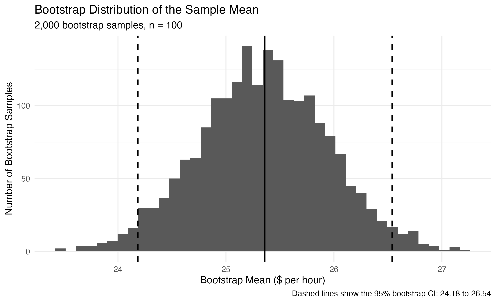
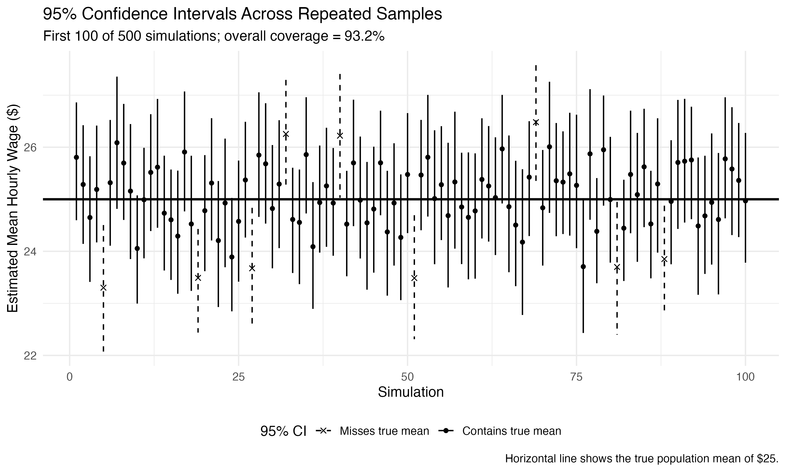
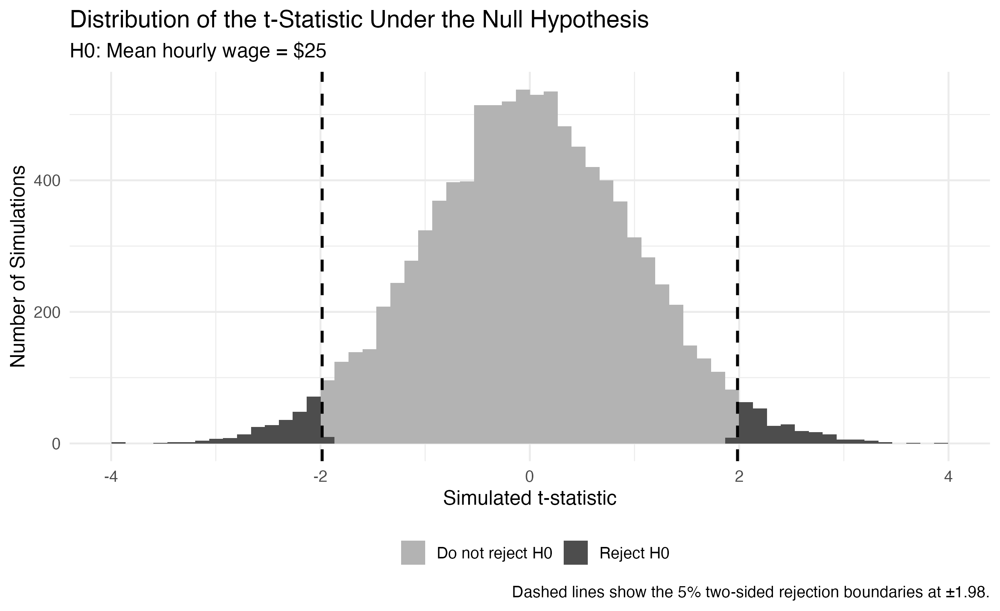
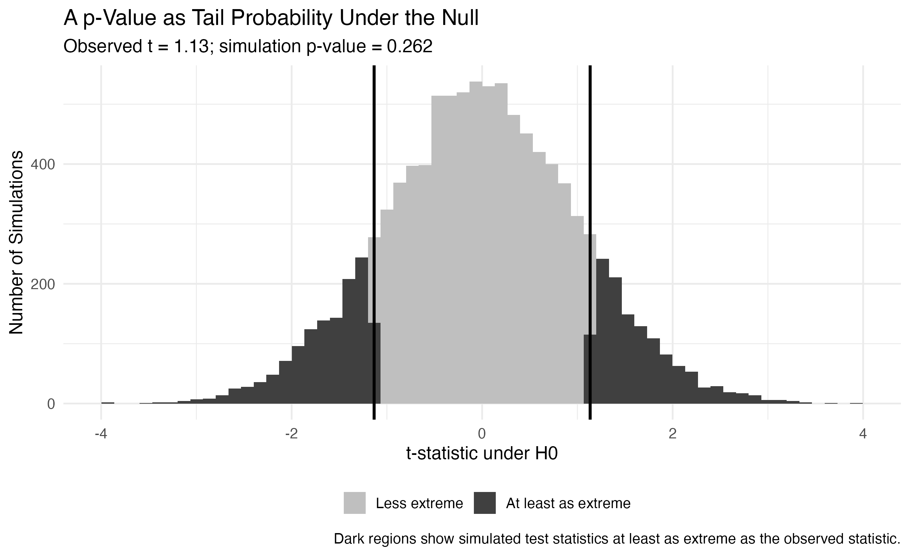

Understanding Confidence Intervals and p-Values Through Simulation
Understanding Confidence Intervals and p-Values Through Simulation
Confidence intervals and p-values are two of the most common ideas in statistics, but they are also easy to misunderstand.
A 95% confidence interval does not mean that there is a 95% probability that the true parameter is inside one particular interval. Similarly, a p-value does not tell us the probability that the null hypothesis is true.
Simulation provides a useful way to see what these ideas actually mean.
In this post, I use a simple example involving hourly wages. I assume that the true population has:
- Mean hourly wage: $25
- Standard deviation: $6
Because the population is simulated, I know the true parameter. This makes it possible to see whether statistical procedures actually behave the way we expect.
Building a Bootstrap Confidence Interval
Suppose I draw a random sample of 100 workers from this population.
In real data, I would observe only this sample and would not know the true population mean.
To measure uncertainty in the sample mean, I use the bootstrap.
The basic idea is simple:
- Start with the original sample.
- Draw a new sample of the same size with replacement.
- Calculate the mean of the new sample.
- Repeat this process many times.
I repeat the resampling process 2,000 times, producing 2,000 different bootstrap estimates of the mean.
The bootstrap distribution is centered near the original sample mean.
The dashed vertical lines show the 2.5th and 97.5th percentiles of the bootstrap distribution. In this simulation, the resulting 95% bootstrap confidence interval is approximately:
[ [24.18, 26.54]. ]
The true population mean of $25 falls inside this interval.
However, one successful interval does not explain what “95% confidence” actually means. For that, we need to repeat the entire experiment many times.
What Does 95% Confidence Mean?
To understand confidence interval coverage, I repeat the following experiment 500 times:
- Draw a new random sample of 100 workers.
- Construct a 95% bootstrap confidence interval.
- Check whether the interval contains the true population mean of $25.
The next figure shows the first 100 confidence intervals from these simulations.

Most intervals cross the horizontal line at $25, meaning that they contain the true population mean. A small number miss it completely.
Across all 500 simulations, the confidence intervals contained the true mean 93.2% of the time.
This is reasonably close to the intended 95% coverage. The exact percentage does not have to equal 95% in a finite simulation because both the sampling process and the bootstrap procedure contain randomness.
The important interpretation is:
If we repeatedly collected samples and constructed 95% confidence intervals in the same way, approximately 95% of those intervals would contain the true parameter.
This is different from saying that there is a 95% probability that the parameter is inside one particular interval.
Once an interval has been calculated, it either contains the true parameter or it does not. The 95% refers to the long-run performance of the procedure.
Hypothesis Testing Through Simulation
Confidence intervals describe uncertainty around an estimate. Hypothesis tests ask a slightly different question.
Suppose we want to test:
[ H_0: = 25 ]
against the two-sided alternative:
[ H_1: . ]
To understand how hypothesis testing works, I simulate 10,000 samples under the null hypothesis, meaning that every simulated population has a true mean of $25.
For each sample, I calculate the t-statistic:
[ t = {s/}. ]
If the null hypothesis is true, most t-statistics should be close to zero. Very large positive or negative values should be relatively rare.

The simulated null distribution is centered around zero.
For a two-sided test with a 5% significance level, the critical values are approximately:
[ -1.98 . ]
The dark regions in the two tails are the rejection regions.
If the observed test statistic falls in one of these regions, the result would be sufficiently unusual under the null hypothesis that we would reject (H_0) at the 5% level.
Notice that rejection does not mean that the null hypothesis is impossible. Even when (H_0) is true, around 5% of samples should fall into the rejection region purely because of random sampling variation.
This is the logic behind a Type I error.
What Does a p-Value Mean?
Now suppose I observe a sample and calculate:
[ t = 1.134. ]
The simulated p-value is:
[ p = 0.2616. ]
The p-value can be interpreted using the same null distribution.

The dark areas show simulated test statistics with an absolute value at least as large as the observed statistic.
About 26.2% of simulated test statistics are at least this extreme.
This means that if the null hypothesis were true, a result at least as far from zero as the one we observed would not be especially unusual.
Because
[ 0.2616 > 0.05, ]
I do not reject the null hypothesis at the 5% significance level.
Importantly, this does not mean that I have proven that the true mean is exactly $25.
A large p-value means only that the observed evidence is not sufficiently inconsistent with the null hypothesis.
Similarly, a small p-value would not tell us the probability that the null hypothesis is false. It would tell us that the observed statistic would be relatively unusual if the null hypothesis were true.
How Confidence Intervals and Hypothesis Tests Connect
Confidence intervals and hypothesis tests may look like separate procedures, but they are closely related.
A 95% confidence interval contains values of the parameter that are reasonably consistent with the sample.
A two-sided hypothesis test at the 5% level asks whether a particular hypothesized value is inconsistent enough with the data to reject.
This means that, under standard conditions:
If the null value lies outside a 95% confidence interval, a two-sided hypothesis test at the 5% level will generally reject that null value.
Both procedures are therefore different ways of describing sampling uncertainty.
Simulation makes this relationship easier to see because we can repeatedly generate samples and directly observe how often different outcomes occur.
Takeaway
Simulation helps make statistical inference less abstract.
The bootstrap shows how repeated resampling can approximate the uncertainty around an estimate even when we only observe one sample.
Repeated simulation also shows what a 95% confidence interval really means: the procedure captures the true parameter approximately 95% of the time over repeated samples.
Hypothesis testing starts from a different perspective. It asks what values of a test statistic we would expect if the null hypothesis were true.
The rejection region contains outcomes that would be unusually extreme under the null, while the p-value measures how frequently results at least as extreme as the observed result appear in the null distribution.
The most important ideas are:
- A 95% confidence interval is about the long-run coverage of the procedure.
- A p-value is calculated assuming the null hypothesis is true.
- A large p-value does not prove the null hypothesis.
- A small p-value does not give the probability that the null hypothesis is false.
- Both confidence intervals and hypothesis tests are ways of reasoning about sampling uncertainty.
Simulation makes these ideas visible rather than purely mathematical.